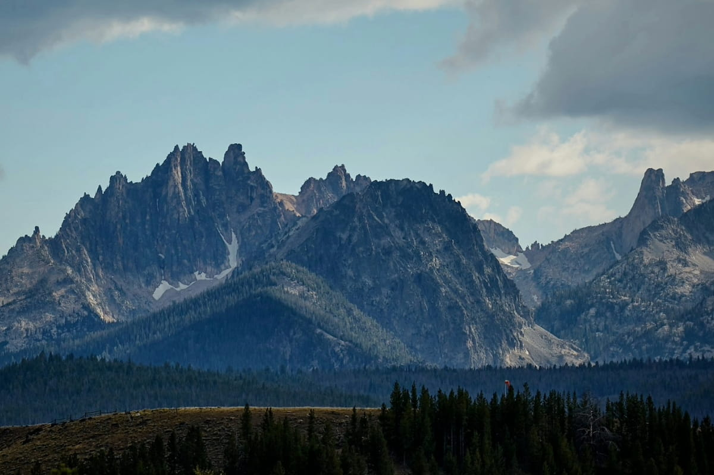
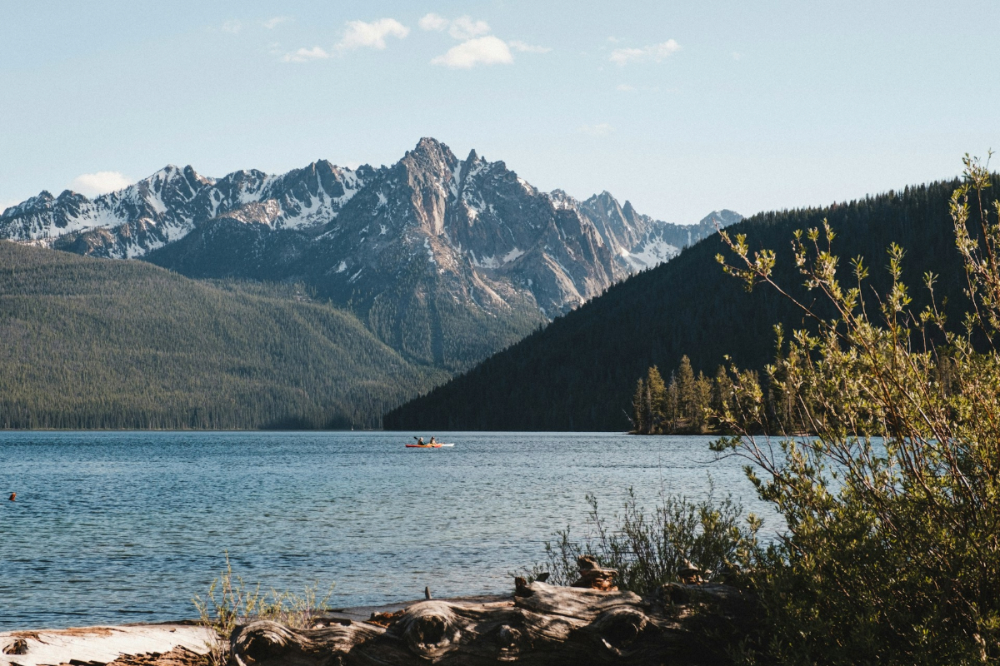
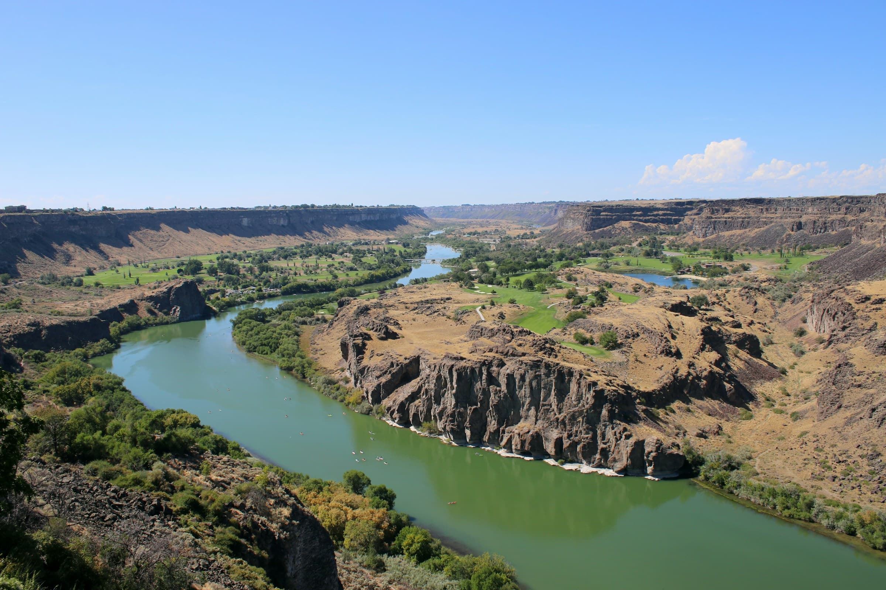
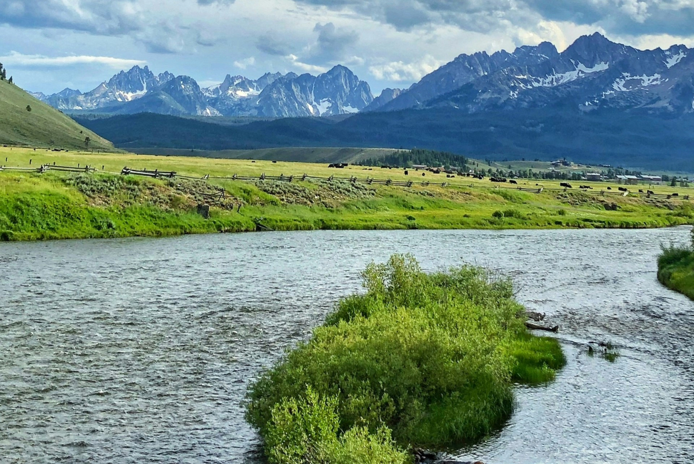

Mountains and Rivers

Sawtooth Mountains
The Sawtooth range is located in the central part of the state. The highest peak within the Sawtooths is Thompson Peak, which reaches 10,751 feet high.

Bitterroot Mountains
The Bitterroot range is located to the east, and forms part of the border between Idaho and Montana. There are some peaks in the Bitterroot range that are over 10,000 feet in elevation, including Trapper Peak, which is the highest point in Montana at 10,157 feet tall.

Snake River
The Snake River is probably the most well-known river in Idaho, as well as the longest. It originates in Wyoming’s Yellowstone State Park and flows west through the Snake River Plains in Idaho until it joins with the Columbia River in Washington.

Salmon River
The Salmon River, also known as “the River of No Return,” runs 425 miles through Central Idaho. With its headwaters originating in the Sawtooth National Forest northwest of the city of Stanley, it runs northeast until it bends west near the city of Salmon. It continues west until its confluence with the Snake River near the point where the borders of Idaho, Oregon, and Washington meet.